WANG
WANGILLUSTRATION / PERSONAL IDENTITY
Dogheads.
An ongoing family of odd, colorful hand-painted dog characters. The simple black-line dog face has become my personal signature, appearing throughout this portfolio.
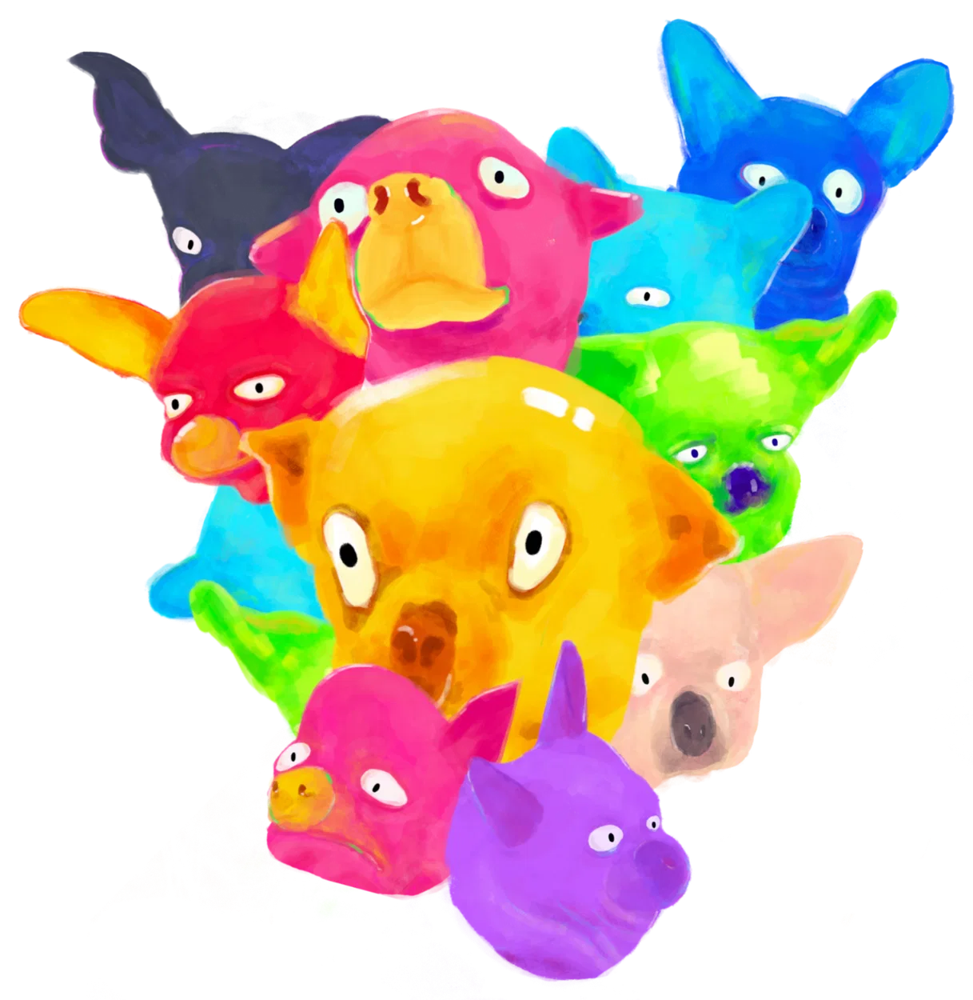
01 / CHARACTER EXPLORATIONS
Meet the pack.
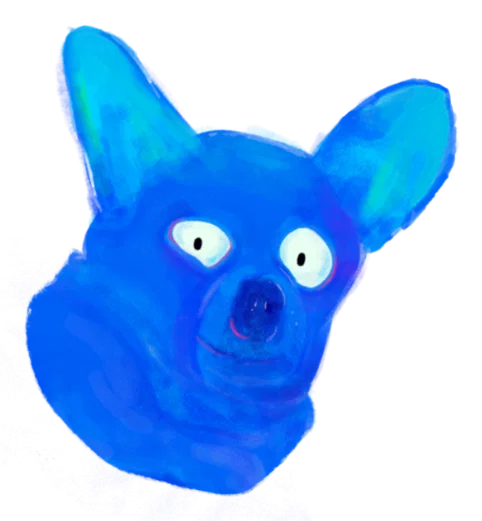
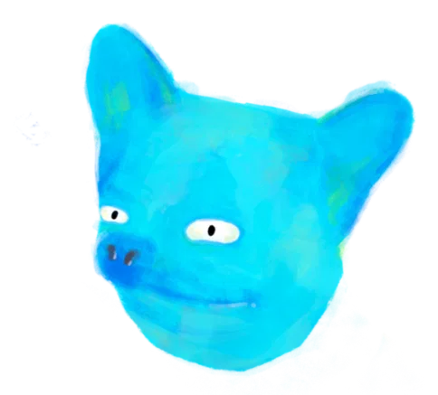
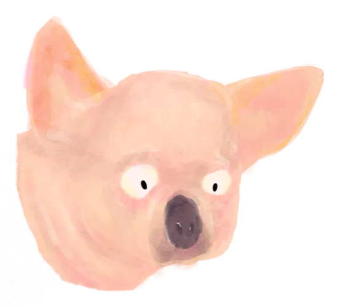
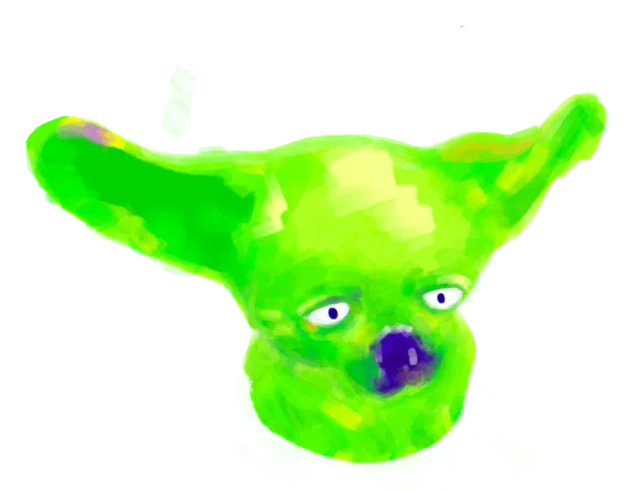
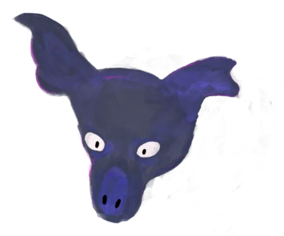
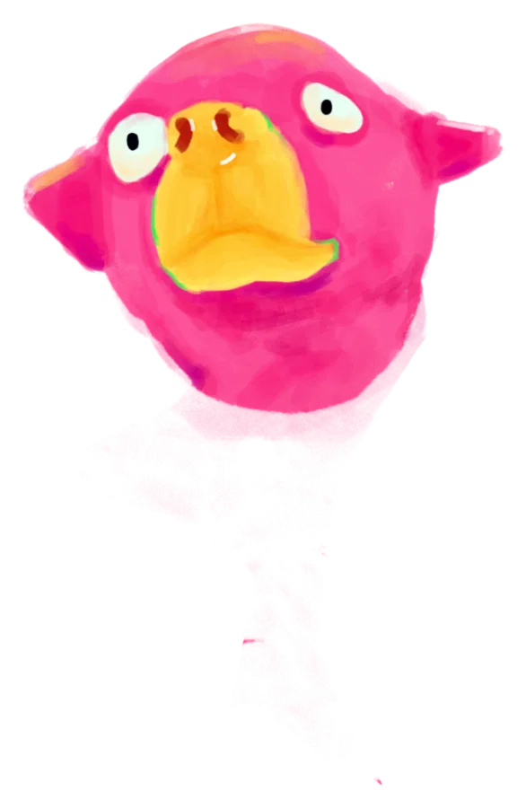
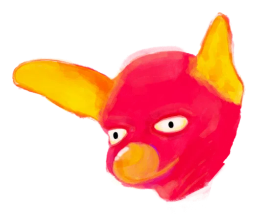
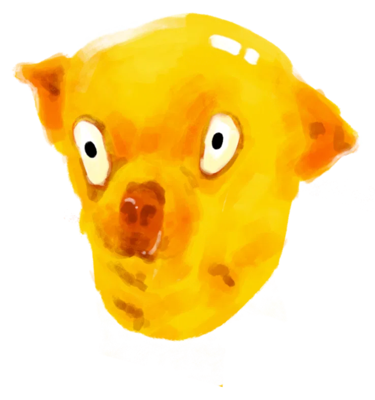
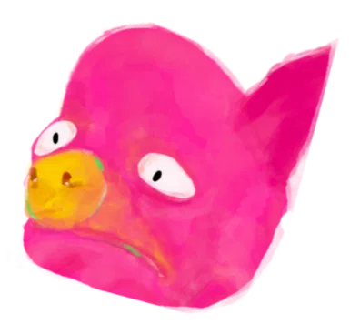
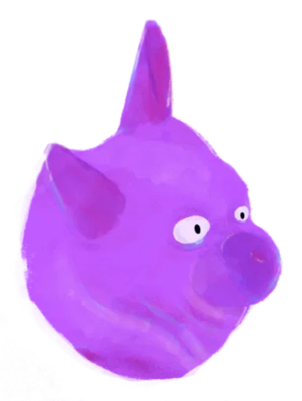